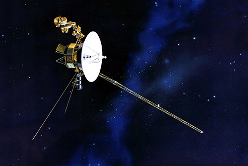
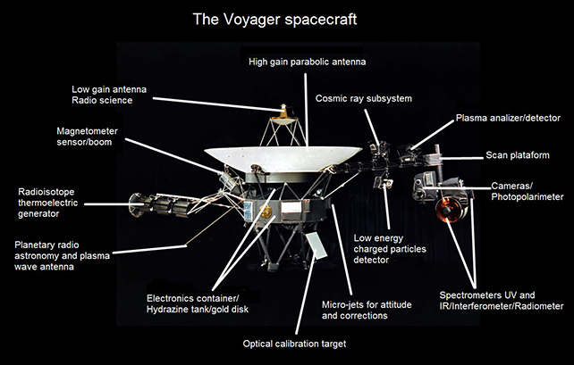

«Вояджер 2» — действующий космический зонд, запущенный НАСА 20 августа 1977 года в рамках программы «Вояджер» для исследований дальних планет Солнечной системы. Первый и единственный земной космический аппарат, достигший Урана (в январе 1986 года) и Нептуна (в августе 1989 года). «Вояджер-2» более 25 лет удерживал рекорд по дальности достигнутого и изученного объекта Солнечной системы, пока его не превзошёл космический зонд «Новые горизонты», который в июле 2015 года достиг Плутона.
Основная миссия «Вояджера-1» заключалась в исследовании Юпитера, Сатурна и спутника Сатурна, Титана . «Вояджер-2» должен был также исследовать Юпитер и Сатурн, но по траектории, по которой можно было бы продолжить путь к Урану и Нептуну или перенаправить на Титан в качестве резервной копии для «Вояджера-1». После успешного выполнения задач «Вояджера-1» «Вояджер-2» должен был получить продление миссии, чтобы отправить зонд к Урану и Нептуну.
Масса аппарата при старте составляла 798 кг, масса полезной нагрузки — 86 кг. Длина — 2,5 м. Корпус аппарата — десятигранная призма с центральным проёмом. На корпус посажен отражатель направленной антенны диаметром 3,66 метра.  Электропитание обеспечивают три вынесенных на штанге радиоизотопных термоэлектрических генератора, использующих плутоний-238 в виде окиси (в силу удалённости от Солнца солнечные батареи были бы бесполезны). На момент старта общее тепловыделение генераторов составляло около 7 киловатт, их кремний-германиевые термопары обеспечивали 470 ватт электрической мощности. По мере распада плутония-238 (его период полураспада составляет 87,7 года) и деградации термопар мощность термоэлектрических генераторов падает (при пролёте мимо Урана — 400 ватт). На 30.11.2021 остаток плутония-238 равен 70.5% от начального, к 2025 году тепловыделение упадёт до 68.8% от начального. Кроме штанги электрогенераторов, к корпусу прикреплены ещё две: штанга с научными приборами и отдельная штанга магнитометра
«Вояджер-2» стартовал 20 августа 1977 года, то есть на 16 дней раньше «Вояджера-1». Миссия «Вояджера-2» первоначально включала изучение только Юпитера и Сатурна, а также их спутников. Траектория полёта также предусматривала возможность пролёта мимо Урана и Нептуна, которая была успешно реализована. За счёт гравитационных манёвров у Юпитера, Сатурна и Урана «Вояджер-2» смог на 18 лет сократить срок полёта к Нептуну (по сравнению с полётом от Земли по гомановской траектории).